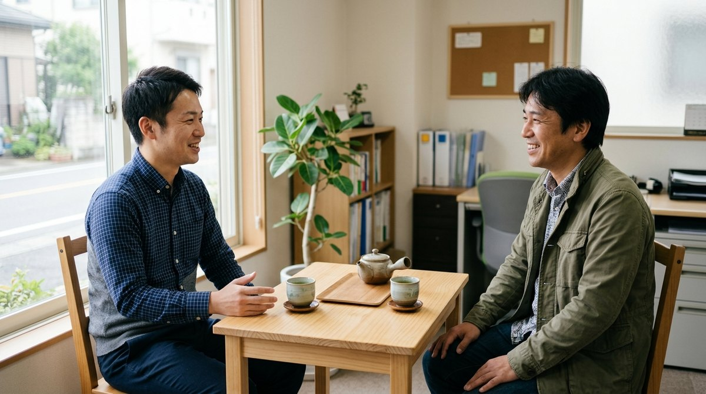
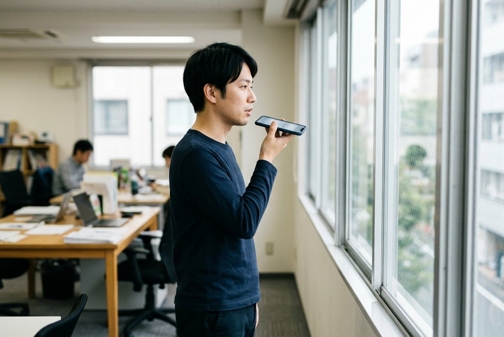

会社の書く手間が、すいすい減っていく。
日報・議事録・お客さまへのメール。短いメモを入れるだけで、読みやすい文章が数秒で整います。
備品・在庫チェックと、来客や納期の予定の共有もひとつの画面で。
見本で書類の下書き・備品・在庫チェック・予定の共有を試せます。お名前の登録はいらず、入れた内容も写真も保存されません。
単語や箇条書きで十分です。金額・日付・件数・社名は、入れたとおりに残します。
📝 業務日報
🗒️ 議事録
「🎤 こえメモ」を押して、いつもの報告のように話すだけ。外国籍のスタッフがベトナム語・インドネシア語・ミャンマー語・タガログ語・ネパール語・英語・中国語などで話しても、自動で聞き分けて、日本語に訳して欄に振り分けます。
たとえば A社に見積を説明しました。来週までに追加の見積がほしいそうです
と話すだけ。
アプリのダウンロードはいりません。お渡しするQRを開くだけで、すぐに使い始められます。
業務日報、議事録、お客さまへのメールなど8種類
「A社訪問」「見積の説明」「請求書3件」など短いメモでOK
コピーして、いつもの日報やメールに貼るだけ。「もう少し短く」「作り直す」もボタン1つ
てますいが目指しているのは、終業後に書類に追われる時間を減らすことです。

※ 写真はイメージです。
8つの書類に対応しています。会社の様式に合わせた調整もご相談ください。
書類の下書き・備品・在庫チェック・予定の共有を、同じ画面で使えます。月額の中にすべて含まれます。

メモから、日報・議事録・お客さまへのメールの文章を数秒で清書。
並べた備品をスマホで撮るだけで一覧に。棚卸しや貸出品の返却のときに撮り直すと、足りないものが分かります。確かめる目印（管理番号・ラベルなど）は、会社ごとに自由に決められます。
来客・打ち合わせ、納期・提出期限、社内予定を、全員の画面でひと目で確認できます。期限が近づくと印が付きます。来客予定や納期一覧を写真・PDFで読み取ることもできます。
会社の大切な記録を扱うからこそ、最初から気をつけて作っています。
金額や日付が変わってしまうことはない？
金額・日付・数量・品名・型番は、入れたとおりに書くよう決めています。合計を計算して足したりもしません。できあがりは、必ずサッと確かめてからお使いください。
ほかの会社から見られる心配は？
会社ごとの専用ページになっていますので、ほかの会社からは見えません。
入れた内容はどうなるの？
書類の下書きに入れたメモは、てますいには保存しません。備品・在庫チェックの名前と写真、予定の名簿と予定は、その会社の専用の場所にだけ保存します。どちらもAIの勉強（学習）に使われることはありません（Google Cloud の仕組みを使っています）。
原因や対策まで書いてくれる？
入力に無い原因や対策は、「（案）」と付けて控えめに書きます。AIが勝手に原因を決めつけることはありません。最後の判断は、皆さまでお願いします。
まずは1か月、皆さまで使ってみてからご判断ください。
最低契約期間は6か月です（無料体験の1か月は含みません）。7か月目からは1か月ごとの更新で、前月末までにご連絡いただければ翌月末で解約できます。ご説明・導入のお手伝いは、基本はオンラインで全国対応です。訪問をご希望の場合は、交通費（実費）をいただきます。提供：HiMaWaSa Sync（大阪府）
登録なしで、すぐに開きます。
申込フォームから2分ほどで送れます（会社名・ご担当者さまのお名前・ご連絡先）。通常2営業日以内にご連絡し、会社専用の入口をご案内します。
フォームが使えない場合は メールでもお申し込みいただけます。